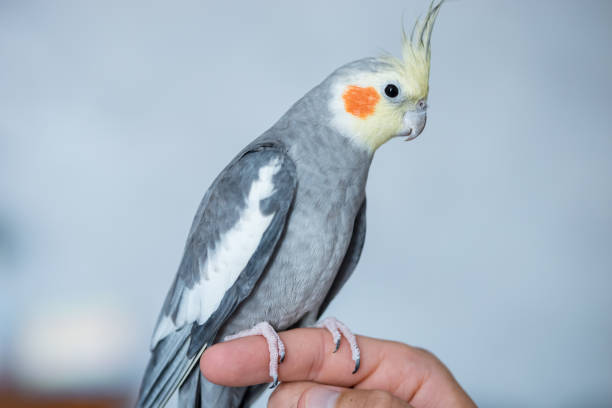
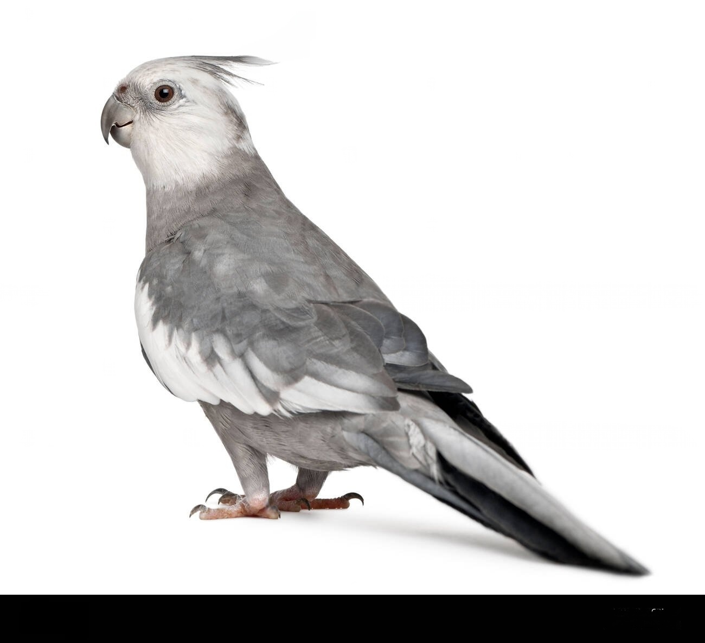
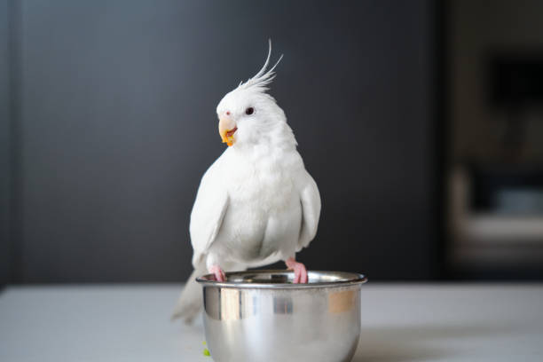
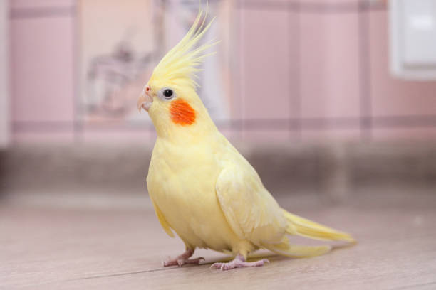

Normal Grey: The original wild-type coloration. Males have bright
yellow faces with vivid orange cheeks, while females have duller
faces and barred tails.

White-faced: Lacks the yellow and orange pigmentation. These
cockatiels have grey and white feathers, and both males and females
have white faces instead of yellow.

Albino (White-faced Lutino): A combination of Lutino and White-faced
mutations. They appear completely white with red eyes, having no
pigment in their feathers.

Lutino: Bright yellow body with orange cheek patches and red eyes.
Very popular for their striking appearance and gentle nature.